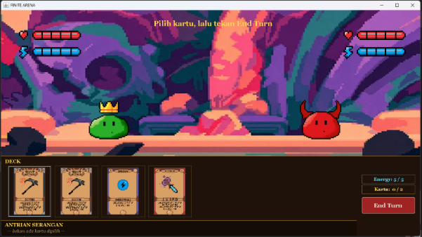
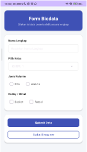
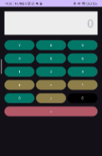
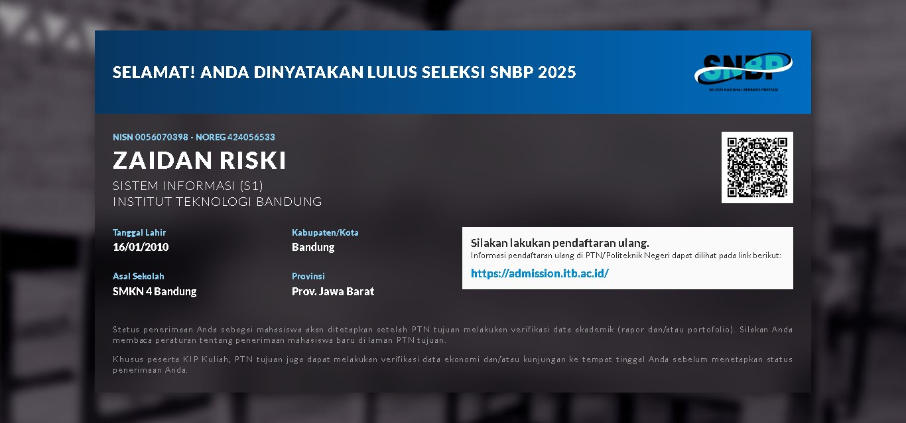

Portofolio
Berikut adalah beberapa proyek yang telah saya kerjakan:
1. Proyek Game

Game berbasis Turn-Based Strategy Card Game yang menggabungkan elemen strategi mendalam dengan sistem pertarungan yang terstruktur.
2. Proyek Aplikasi Mobile


Aplikasi mobile yang dirancang untuk memberikan pengalaman pengguna yang optimal dengan antarmuka yang intuitif dan fungsionalitas yang lengkap.
3. Diterima Kampus Bergengsi

Diterima sebagai mahasiswa di salah satu kampus ternama dengan prestasi akademik yang memuaskan pada bidang studi yang saya minati, menunjukkan dedikasi dan komitmen saya terhadap pendidikan tinggi. Perestasi ini mencerminkan kemampuan saya dalam menghadapi tantangan akademik dan menunjukkan potensi saya untuk berkembang lebih lanjut di lingkungan pendidikan yang kompetitif. Saya berkomitmen untuk terus belajar dan berkontribusi dalam bidang studi saya, serta bersemangat untuk menghadapi tantangan baru yang akan datang di masa depan.